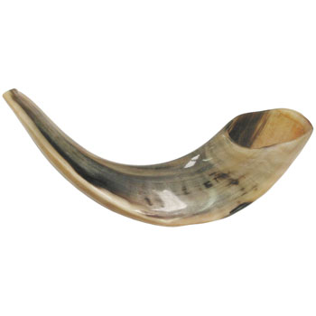

Rosz ha-Szana, Rosz Haszana, (ang. Rosh Hashanah) Nowy Rok (hebr. ראש השנה - początek roku, dosł. głowa roku) jest pierwszym dniem kalendarza żydowskiego.
Zgodnie z Pismem Świętym, Rosz Haszana nazwane jest Świętem Trąbek lub Świętem Trąbienia, a przypada w ... siódmym miesiącu roku, czyli miesiącu Tiszri – (wrzesień/październik w kalendarzu gregoriańskim).

„I przemówił Pan do Mojżesza tymi słowy: Powiedz synom izraelskim tak: W miesiącu siódmym, pierwszego dnia tegoż miesiąca, będziecie mieli dzień odpoczynku, dzień pamiętny, obwołane trąbieniem, święte zgromadzenie; żadnej ciężkiej pracy wykonywać nie będziecie, a składać będziecie ofiary ogniowe dla Pana.” (3 Mojż. 23:23-25, BW)
Jak to możliwe, aby Nowy Rok świętować w środku roku, a nie na jego początku?
Pierwszym miesiącem roku religijnego jest Nissan, natomiast miesiąc Tiszri otwiera nowy rok w innej kategorii. Nie jest trudno to zrozumieć, jeżeli uświadomimy sobie, że w życiu codziennym również pojęcie 'nowy rok' odnosi się do różnych dziedzin życia: np. nowy rok szkolny rozpoczyna się we wrześniu, a nowy rok budżetowy w kwietniu.
Istotną cechą święta Rosz Haszana jest to, iż obchodzony jest on zupełnie inaczej niż dzień Nowego Roku tradycyjnie celebrowany w większości kultur. Nie jest to okazja do hucznej zabawy, ani picia szampana i alkoholu. W tym przypadku, atmosfera radości miesza się z atmosferą grozy i trwogi oraz skruchy przed Bogiem, zwanej ‘teszuwa’ (hebr. pokuta, skrucha). Różnicę tę można pojąć, jeżeli uświadomi się, jaki cel przyświeca temu biblijnemu świętu.
Rosz Haszana to Dzień Sądu. Dni pomiędzy Rosz Haszana (1 Tiszri) a Jom Kipur (10 Tiszri), nazywane są Jamim Noraim (Dni grozy) lub Aseret Jemaj Teszuwa (Dziesięć Dni Skruchy). Według tradycji żydowskiej w dzień Rosz Haszana Najwyższy otwiera Księgi i zapisuje w nich przyszłość całej ludzkości oraz każdego człowieka z osobna, według jego win i zasług. Przygotowania do tego dnia rozpoczynają się już miesiąc wcześniej, w miesiącu Elul.
Każdy bojący się Boga człowiek powinien wtedy przeanalizować własne życie, uświadomić sobie grzechy i winy jakie popełnił przeciwko Bogu oraz ludziom. Ten czas staje się okazją do rozliczenia własnego życia. Ponadto dzień ten upamiętnia stworzenie świata i przypomina o Sądzie Bożym. Rosz HaSzana rozpoczyna Dziesięć Dni Pokuty (Aseret Jemaj Teszuwa), które mają za zadanie przygotować duchowo na święto Jom Kippur przypadające 10 Tiszri, w którym to Arcykapłan – jeden jedyny raz w roku wchodził do Miejsca Najświętszego, by wstawić się za grzechy ludu. Po spełnieniu wszystkich ofiar oraz modlitw modlącego się na zewnątrz w tym czasie ludu następowała radość z pojednania się z Bogiem.
Po analizie głębokiego duchowego znaczenia tego biblijnego święta można zauważyć, iż ten ważny dzień nic nie stracił na swej aktualności, nawet dla chrześcijan. Jak najbardziej jesteśmy przecież przed a nie po Dniu Sądu, który zbliża się nieuchronnie i dotyczyć będzie każdego człowieka, czy mu się to podoba, czy nie. Atmosfera tego święta uświadamia nam, że w obliczu Najwyższego powinniśmy zrobić rachunek sumienia, zanim ten wielki i straszny Dzień Sądu nastanie.
Owszem, jako osoby głęboko wierzące w Najwyższego Kapłana, naszego Zbawiciela Jezusa Mesjasza i przekonani o wyższości Jego pozycji nad starożytnymi arcykapłanami wiemy, że w niczym On nie uchybił wstawiając się za nas w niebiańskim Miejscu Najświętszym. Jednak, czy możemy być tak zarozumiali, żeby w tym dniu być zupełnie pewni własnego zbawienia? Czy nie musimy analizować rokrocznie naszych popełnianych przewinień? Mówi się, że człowiek uczy się na podstawie własnych błędów i tak jest też w tym przypadku. Jak można wyciągnąć wnioski z własnych grzechów i uchybień, jeżeli nie zastanowimy się nad nimi i nie przeanalizujemy ich dogłębnie?
Dlatego właśnie warto w czasie miesiąca Elul (miesiąc przed Rosz Haszana), zrobić sobie dokładny rachunek sumienia, aby zastanowić się poważnie nad pytaniem: Czy jestem gotowy aby stanąć przed Tronem Bożym? Następnie w okresie od Rosz Haszana do Yom Kippur okazując głęboką skruchę za przewinienia możemy z ufnością modlić się do Najwyższego i błagać go o przebaczenie naszych win, na podstawie ofiary, którą jako Arcykapłan złożył za nas Jeszua (Jezus) Mesjasz.
Wielu ludzi zwykło traktować zbawienie jako coś oczywistego, które naturalnie nam się należy, bo przecież Pan Jezus umarł już na krzyżu, składając ofiarę za ludzkość. Ale czy On umarł również za Ciebie, jeżeli nie jesteś w stanie zdobyć się na odrobinę skruchy? To nie jest tak, że wszystkie grzechy są nam automatycznie przebaczane, bo Pan Jezus za to umarł, ale wymaga się od nas pełnej świadomości jak wielka ofiara została za nas złożona przed Bogiem.
Ktoś może powiedzieć: „Ależ ja codziennie okazuje skruchę, dlaczego mam to robić właśnie w tym dniu, tylko raz w roku?”. Odpowiedź: Dlatego, ponieważ taki nakaz znajduje się w Piśmie Świętym, o czym w kolejnym rozdziale poświęconym świętu Jom Kippur.
Ponadto, jedno drugiego nie wyklucza. Można przyrównać tę sytuację do sprzątania domu. Chociaż nie sprząta się domu tylko raz w roku, ale utrzymuje się porządek każdego dnia, to jednak raz w roku jest potrzebne tzw. generalne sprzątanie – zupełne odświeżenie mieszkania, czasem nawet malowanie lub nawet zmiana dekoracji, aby poczuć nową świeżość. Tak samo jest z duszą człowieka. Raz w roku potrzebujemy takiej odnowy duchowej, takiego poważnego podejścia do własnego życia, a czasem nawet całkowitego przewartościowania.
Pełny obraz tego, jak wielkie znaczenie ma taka skrucha odnajdziemy w kolejnym rozdziale, w którym wyjaśniono na czym polega biblijne święto Jom Kippur.